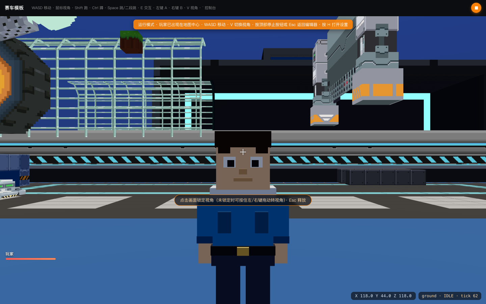
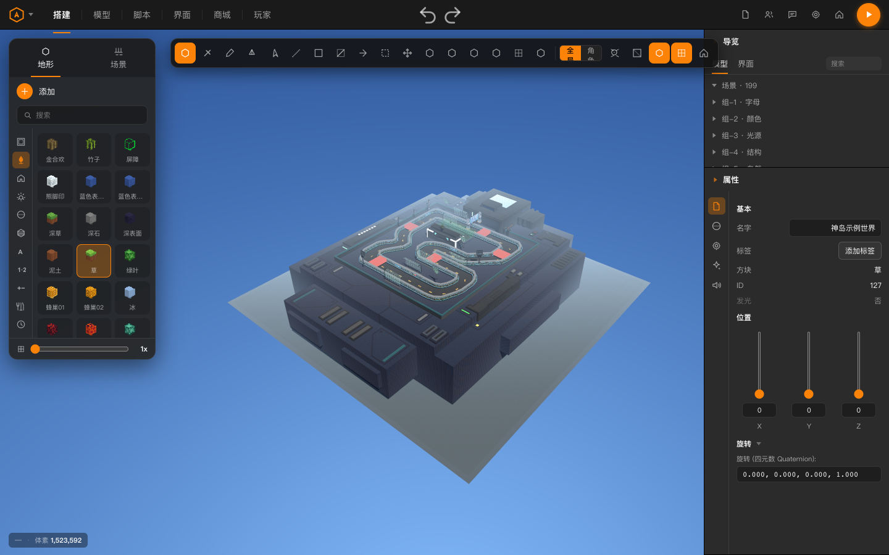
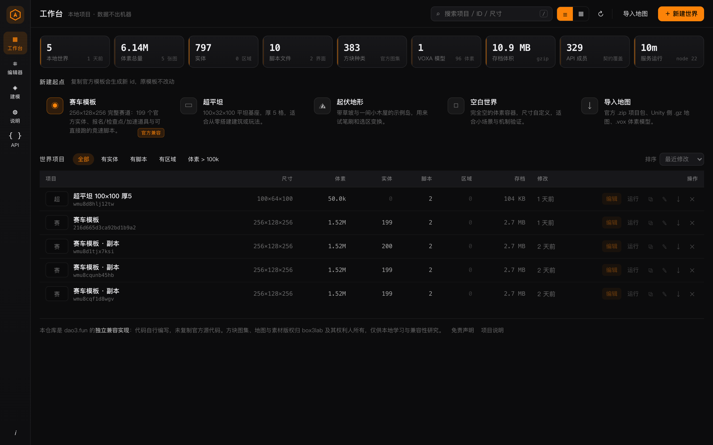
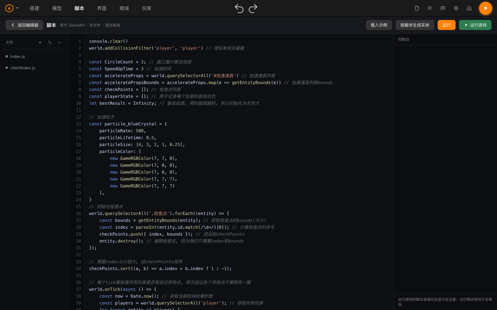
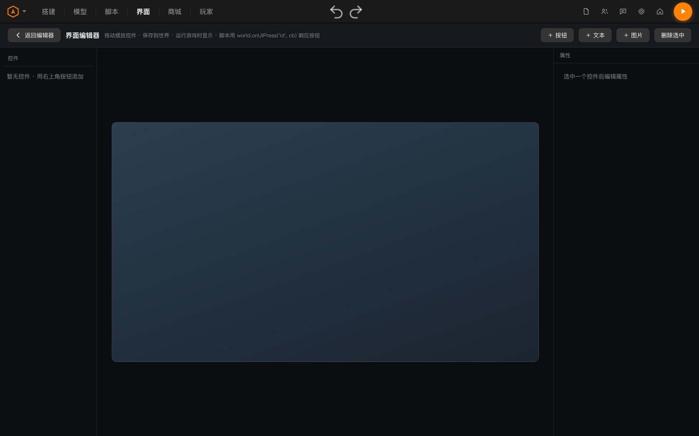
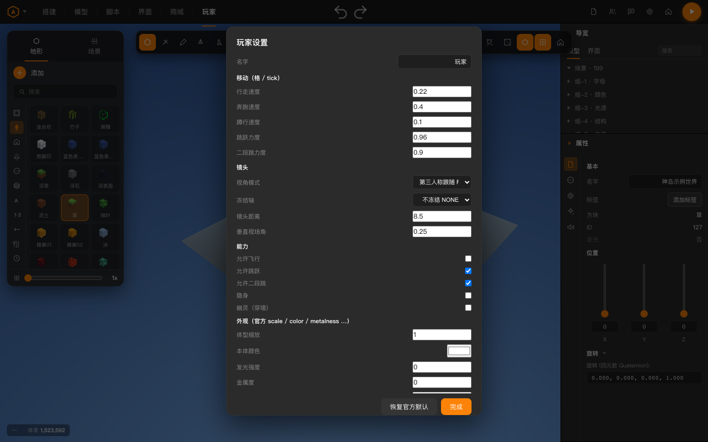
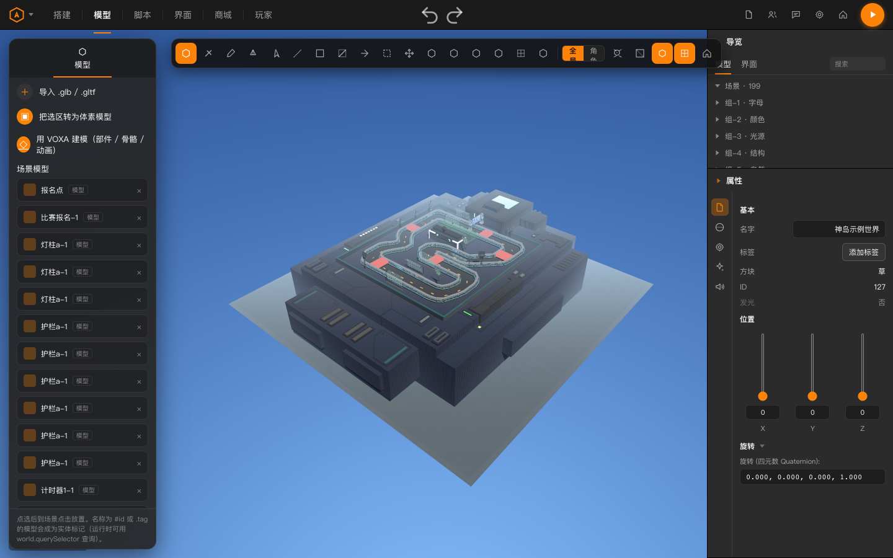
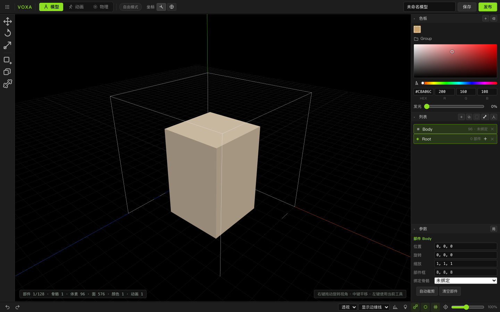
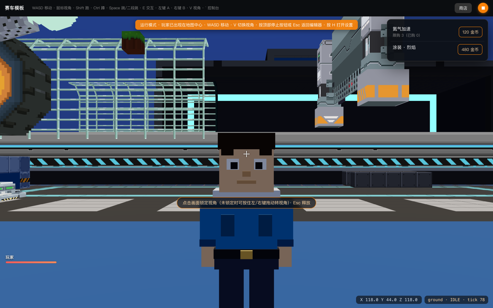

独立兼容实现 · 非官方 · 零第三方依赖
官方导出的地图能打开
官方写法的脚本能跑
dao3.fun（神奇代码岛）编辑器与运行时的本地实现。全部代码在本仓库自行编写，
依据官方公开的文档与类型声明做到接口兼容——不是复刻源码，也没有源码。
地图与 Unity 侧 .gz 格式互通，官方导出的 .zip 项目包可直接打开继续做。
macOS / Linux ./run.sh
Windows 双击 启动-Windows.bat
只需要 Node 18+，不需要 npm install——运行时只用 Node 内置模块。

X 115.0 Y 44.9 Z 105.0 · tick界面实拍
全部由 scripts/capture-screenshots.mjs 驱动真实页面生成——改了 UI 重跑一次，文档图就跟着更新。




world.onUIPress 响应



world.products() 的可视化购买入口，支持限量与购买事件三分钟跑起来
没有任何依赖要装。地图存在 server/data/worlds/ 下，纯本地读写，不联网。
macOS / Linux
./run.sh
# 或双击 启动-macOS.command端口被占用会自动顺延，并打印实际地址与局域网地址。
Windows
双击 启动-Windows.bat
# 或 PowerShell:
powershell -ExecutionPolicy Bypass -File run-win.ps1没装 Node 会打印下载地址并停住，不会一闪而过。
源码 / 命令行
git clone https://github.com/deepseekv5/dao3
cd dao3 && node start.mjs三端共用 start.mjs：端口探测、局域网地址、图集检查、打开浏览器。
Windows 分支的结论区分了「已静态审计」「按平台 API 显式写好」「未实机验证」三类， 见 Windows 支持说明——开发与回归验证都在 macOS arm64 完成，不假装全平台已测。
能力矩阵
"兼容"不是看着像，是每条都有断言可查。
| 官方能力 | 本项目实现 | 怎么验 |
|---|---|---|
GameAPI 全部成员 | 329 个成员在真实运行时探面对账，含动态挂载的事件通道；属性/方法类型错位也算不通过 | npm run audit:api |
| 单位制：格 / tick | walkSpeed 0.22、64ms/tick、gravity -0.1、jumpPower 0.96；按真实 tick 数归一测量 | 物理夹具断言 |
| 方块碰撞语义 | transparent 只是渲染标记（玻璃/冰/空气墙都挡人），只有 fluid（含 air）不挡；射线与行走同一判据 | 玻璃挡人断言 |
| 方块旋转码 | turn t 时世界面贴的是方块第 (d−t) mod 4 个方向的面，正面按官方约定朝北（−Z） | UV 逐面比对 |
粒子 color0..4 / size0..4 | 存活期五等分的阶段取值，颜色为 ×1000 定点数；逐粒子插值，不是共用一个全局尺寸 | 缓冲属性断言 |
| 显示类属性即时生效 | meshColor/metalness/emissive/shininess 与 player 同名属性赋值即改材质，不等下一帧 | 赋值后读材质 |
| 相机模式与冻结轴 | FOLLOW/FPS/FIXED/RELATIVE；cameraFreezedAxis 八种取值逐个生效；贴墙收到墙外并抬成过肩，不留在几何体里 | 2880 组姿态扫描 |
| 区域触发器 | 官方 bounds/selector/massScale/force + 雾/雨/雪/天空环境覆盖；编辑器可视化盒体 + 运行时注册 | 进出事件断言 |
| 客户端 UI 树 | UiNode/UiBox/UiText/UiInput/UiImage/UiScrollBox/UiScreen/UiScale + input/screen/media/Audio；默认值与量程逐条对齐官方 | 客户端合规断言 |
| 沙箱按端裁剪 | 服务端脚本无 ui/input/Ui*，客户端无 voxels/storage/Game*，名单逐条对照两份 d.ts | 全局面集合断言 |
项目包 .zip | 官方 21 键清单、entitiesTree 恰好 22 字段、player.json 恰好 41 键、assets.json 填真实 CID；本地扩展走 compat.json | 导出→导入回环 |
| 地图存档格式 | gzip(JSON(VoxelPayload))，与官方 Unity 侧 .gz 同构；Accept-Encoding: gzip 时原样吐磁盘字节 | 格式对账 |
| 官方赛车模板 | 199 实体、官方 player/physics/environment 与竞速脚本按零改动可跑。地形需由项目包 .zip 导入（256×128×256 / 152 万格）；fetch:official 只按哈希恢复元数据，还原不了体素 | 模板运行断言 |
已知边界，写下来免得被当成"全都做了"：官方 block-spec.json 没有 slab/stair/shape 字段，
方块一律整格立方，因此不存在台阶形状；蹲下不改物理盒高度（官方无此字段）；
官方 chunks/<CID>.bin 是烘焙后的网格容器而非逐体素列表，
无法解成方块表——判据与复现见 scripts/decode-official-chunks.mjs。
开发文档
与仓库 docs/ 同源，共 12 篇。依赖清单与致谢是必读：前者说明哪些第三方代码真的在跑，后者划清与官方的授权边界。
要成体系地读，进 文档中心：独立落地页，侧边栏在每一页都常驻， 这批文档按「入门 / 内核 / 交付」三组排开，末尾给源码仓库与 Releases 入口。
下载
同一份内容的五种拿法。最上面那件不用下载：官方赛车模板直接在浏览器里跑。三件安装包由 .github/workflows/release.yml 在打 tag 时产出，便携包 zip 保留不变。
DAO3-portable-v1.0.9.zip≈7 MB · Releases →
macOS 磁盘镜像挂载后把文件夹拖到任意位置，双击 启动-macOS.command≈7 MB · .dmg →
Windows 安装程序Inno Setup 6 在 windows-latest 上编译，含开始菜单与卸载项.exe →
GitHub Packagesnpx @deepseekv5/dao3-editor-clone 直接起服务npm →
三件安装包都不含 Node 运行时，前置条件都是 Node 18+。
官方赛车模板地图数据、20 个赛道模型与 40 个音效随包分发，但默认不启用：
首次打开工作台会要求你确认自己有权在本地使用它们，确认前地图不会装进世界库、
模型与音效的请求在服务端一律 403；拒绝则保留程序化示例地形，功能验证不受影响。
这是仓库所有者的分发决定，不构成任何许可授予——三项内容的著作权仍归 box3lab，
不在 Apache-2.0 或任何开源许可之下。仓库被裁剪时可用自有权限执行
npm run fetch:official 按 CID 取回并校验（取回 ≠ 放行，那道确认仍然生效）。原因见
依赖清单与
素材授权。
网页体验版是同一批内容的公开展示：静态托管没有服务端可用来做这道闸门，
所以确认点改为首屏那张卡——列明来源与版权，由访问者点「进入体验」。
每次发布前 npm run check:dist 会扫 git 树、npm tarball、便携包与网页体验版四处，
素材越界、缺运行时必需文件或出现疑似凭据就直接失败。
授权与素材边界
代码和素材是两件事，这里分清楚。
| 内容 | 来源与授权 | 随仓库分发 |
|---|---|---|
| 本仓库代码与文档 | 自行编写 · Apache-2.0 | 是 |
block-id.json / block-spec.json | Box3Blocks-unityPackage · Apache-2.0 · © 2026 神岛实验室 | 是（保留 LICENSE） |
| 方块图集与缩略图 | 由上述 Apache 纹理派生，构建期合成 · 已声明来源与修改 | 是 |
| Three.js | MIT · © 2010-2023 Three.js Authors | 是（含原始声明） |
| 40 个官方音效 mp3 | dao3.fun 内容服务 · 版权归 box3lab；不在任何开源许可之下，随包分发但默认不放行 | 是（需应用内确认授权） |
| 赛道模型（.vb → gltf，20 个） | 同上 | 是（需应用内确认授权） |
| 官方赛车模板地图数据 | dao3.fun 内容服务 · 版权归 box3lab；随包分发但默认不启用 | 是（需应用内确认授权） |
official-project/cids.json | 纯哈希索引（13 条 CID），不含任何素材本体 | 是 |
方块贴图、方块 ID 表、地图数据、模型与音频素材的著作权归 box3lab 及其权利人所有。 本项目与 box3lab / 神奇代码岛官方无任何隶属、授权或背书关系； 用自有权限取回的内容仅限本地学习与兼容性研究，不得用于商业分发、公开镜像或冒充官方产品。 完整清单见 THIRD_PARTY_NOTICES.md。